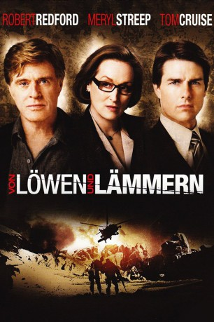
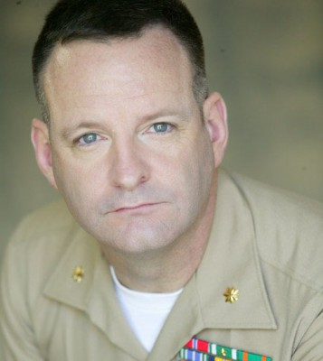

#10174 Von Löwen und Lämmern
Alternativ: Lions for Lambs (Englischer Titel)
 
 IMDB-Wertung: 6.2 / 10
IMDB-Wertung: 6.2 / 10  Metascore: 47
Metascore: 47 
Ein College-Professor will einen begabten Politik-Studenten neu für gesellschaftliche Teilhabe motivieren, während ein konservativer Senator einer kritischen Journalistin ein Interview über eine Militär-Aktion gibt, bei der zeitgleich zwei Studenten des Professors im Front-Einsatz sind.
Jahr: 2007
Dauer: 91 Minuten
FSK: 12
Land: USA Studio: MGMTonspuren: DD5.1 - ,
Untertitel:
Auflösung: 1080p (1920x800) Größe: 3543 MB
Genre: Thriller, Drama, Krieg
Regisseur:  Robert Redford
Robert Redford
Drehbuch: Matthew Michael Carnahan
Soundtrack: Mark Isham
Darsteller:
 Robert Redford als Professor Stephen Malley
Robert Redford als Professor Stephen Malley Meryl Streep als Janine Roth
Meryl Streep als Janine Roth Tom Cruise als Senator Jasper Irving
Tom Cruise als Senator Jasper Irving Michael Peña als Ernest Rodriguez
Michael Peña als Ernest Rodriguez Andrew Garfield als Todd Hayes
Andrew Garfield als Todd Hayes Peter Berg als Lt. Col. Falco
Peter Berg als Lt. Col. Falco Kevin Dunn als ANX Editor
Kevin Dunn als ANX Editor Derek Luke als Arian Finch
Derek Luke als Arian Finch- Larry Bates als Soldier
- Christopher May als Soldier
- Christopher Carley als Sniper
- Kristy Wu als Student
- Bo Brown als Student
 Josh Zuckerman als Student
Josh Zuckerman als Student- Samantha Carro als Student
- John Brently Reynolds als Skinny
- Paula Rhodes als Summer - ANX News Reporter
- Muna Otaru als Nervous Student
- Clay Wilcox als Crew Chief
- Sarayu Blue als Senator Irving's Receptionist
- Amanda Loncar als Young Assistant
- Richard Burns als Senate Employee
-  Kevin Collins als Ranger
- Candace Moon als Fate
- Chris Hoffman als Bully Dog
- Louise Linton als Skin Care Consultant
- Jennifer Sommerfeld als Talk Show Host #1
- Babar Peerzada als Afghan Fighter
- Wade Harlan als Helicopter Pilot
- Elise Jackson als Student
- Mika Brzezinski als Herself / Radio anchor (uncredited)
- Hans Hernke als Soldier (uncredited)
- Richard Kreps als Ranger Lt. (uncredited)
- Talia Montgomery als Journalist (uncredited)
- Lucia Tarantino als Waitress (uncredited)
- David Pease als Soldier
- Heidi Janson als Soldier
- George Back als Student
- Christopher Jordan als Student
- Angela Stefanelli als Student
- Wynonna Smith als Talk Show Host #2
- Paul Adams als Helicopter Pilot
- Michael T. Peoples als Veteran Soldier
 Michael Ahl als Visitor at Vietnam Memorial (uncredited)
Michael Ahl als Visitor at Vietnam Memorial (uncredited)- Lawrence Broughton als Soldier (uncredited)
- Rick Margaritov als Waiter (uncredited)
- Ajani Perkins als Voice (uncredited)
- Sonny Villarreal als Journalist (uncredited)
Datei: X:\2007(N-Z)\Von Löwen und Lämmern (2007, FSK12, 1920x800).mkv seit 16.12.2018
Festplatte: HD 2007(A-Z)-2008(A-F)
 Es gibt insgesamt 56 Filme in der Gruppe '2007(N-Z)'
Es gibt insgesamt 56 Filme in der Gruppe '2007(N-Z)'